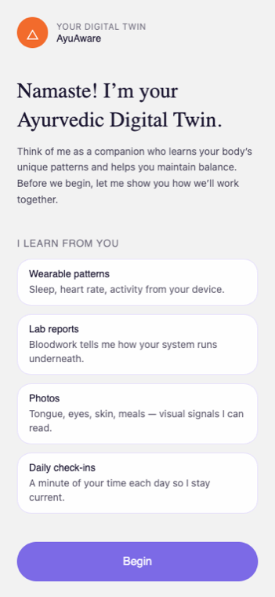
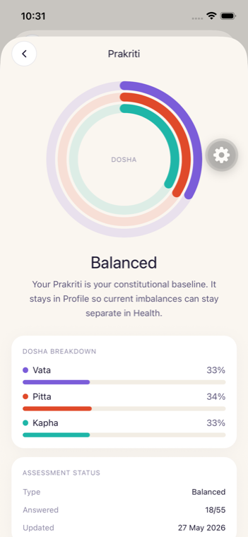
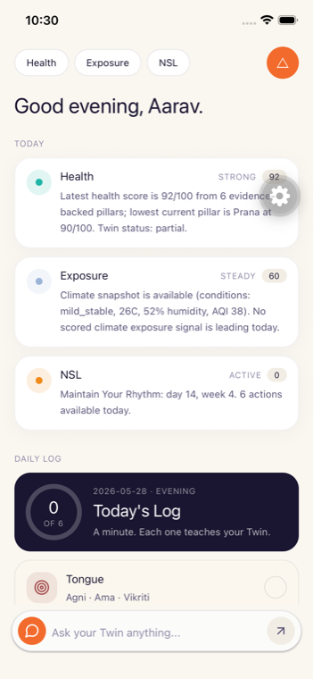
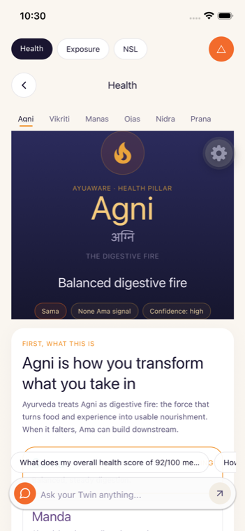
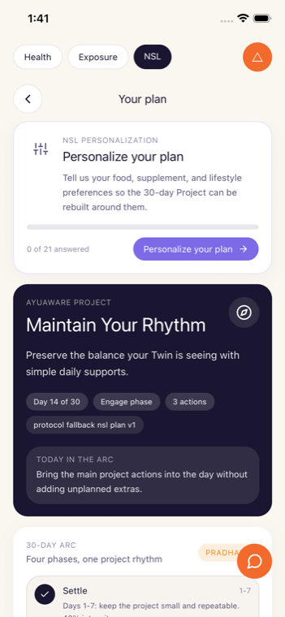
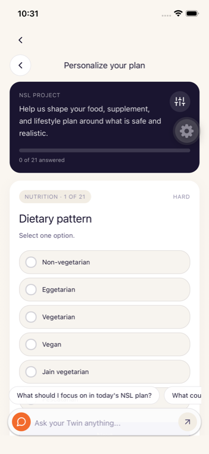
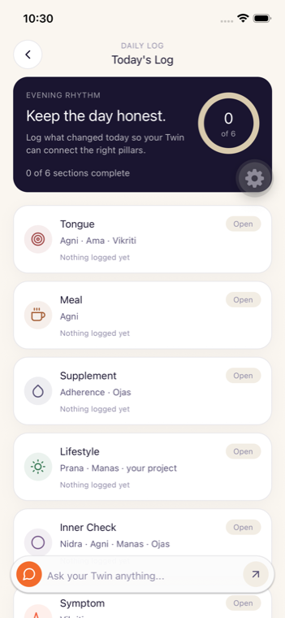
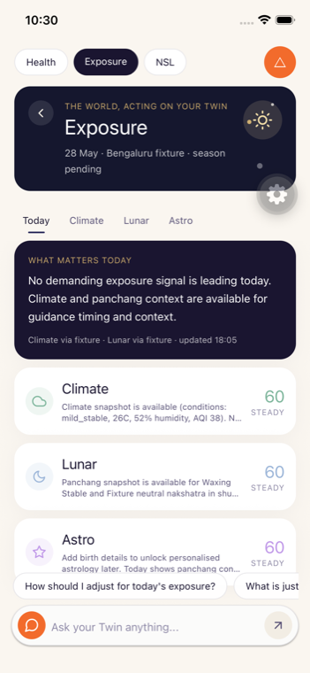
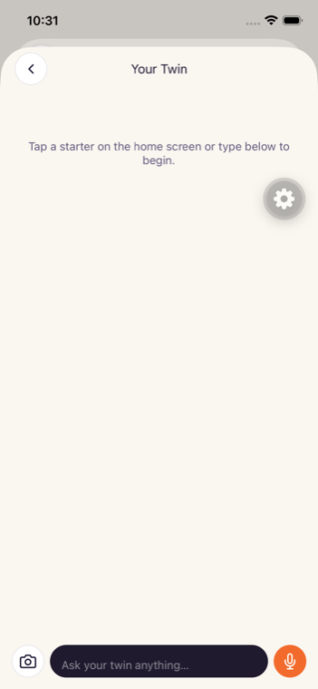
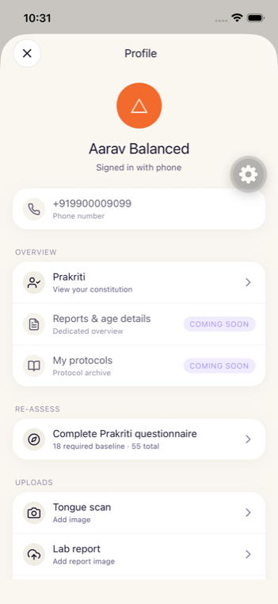

Builds the first baseline, current-state picture, Project, and plan.
AyuAware Backend Architecture
A plain-English map of how source-backed inputs become health readings, Project decisions, NSL actions, notifications, and UI states.
Pipeline at a glance
Start with Source Input to see every lane, input format, and normalization step. Then follow how each source becomes meaning, scores, plans, and UI.
When does this run?
The same backend spine runs at key moments instead of creating one-off shortcuts.
Refreshes interpretations, score context, triggers, and plan state.
Periodically brings passive device data into the same evidence chain.
Routes tongue, lab, meal, supplement, and symptom inputs through processing.
Maintains, modifies, or regenerates Project/NSL when rules require it.
AyuAware Frontend Walkthrough
A client-facing tour of the iOS app: what each screen does, what the user sees, and which backend contract or app route powers it.
Sign in, consent, profile, and baseline questions get the user into the system.
Home and Health show the current read, pillar detail, and evidence context.
NSL turns the backend Project into daily nutrition, supplement, and lifestyle actions.
Daily logs, exposure, wearables, uploads, and chat keep the Twin current.
Sign in and onboarding Auth, profile, wearable choice, uploads, Prakriti, Vikriti, and first setup. Entry flow
User joins the pipeline
This flow creates the user session and collects the first structured context the backend can safely use: identity, location, goals, optional wearable access, optional tongue or lab uploads, Prakriti baseline, and Vikriti current-state answers.
- Phone or Google sign-in establishes the authenticated app session.
- Welcome explains the three source families: wearable, user-fed, and exposure.
- Prakriti is stored as constitutional context; Vikriti starts the current-state picture.
- After completion, the backend prepares first Health, Project, and NSL context.
apps/mobile/app/(auth)/phone.tsx
apps/mobile/app/(onboarding)/welcome.tsx
apps/mobile/app/(onboarding)/prakriti.tsx
apps/mobile/app/(onboarding)/vikriti.tsx
apps/mobile/src/api/contracts/onboarding.ts


Home and Today The user's daily command center for Health, Exposure, NSL, Daily Log, and chat. Main screen
One-page daily read
Home is the compressed view of the backend read model. It shows a health read or estimate, exposure context, NSL state, daily-log progress, and a persistent Twin chat entry point.
- The Health card reflects score/readiness/estimate output from the backend.
- Exposure summarizes climate, lunar, and astro context for today.
- NSL previews whether the Project is active and how many actions are available.
- Daily Log tiles let the user add fresh evidence without leaving the main flow.
apps/mobile/app/(tabs)/index.tsx
apps/mobile/src/api/contracts/today.ts
apps/mobile/src/components/home/TodayInsightRow.tsx
apps/mobile/src/components/home/DailyLogTile.tsx

Health and pillar screens Six dynamic pillars, score explanation, education, and evidence drilldown. Health read
Score plus explanation
The Health tab lets the user move across Agni, Vikriti, Manas, Ojas, Nidra, and Prana. Each pillar page combines the current read, confidence/coverage status, educational copy, and links to how the reading was calculated.
- Pillar tabs map to backend score/readiness and pillar detail read models.
- How calculated and View evidence are transparency entry points.
- Prakriti is visible as context, but it is not treated as a dynamic scored pillar.
- If official score gates are not met, the UI can still show backend-authored estimate/status text.
apps/mobile/app/(tabs)/health.tsx
apps/mobile/app/(tabs)/prakriti.tsx
apps/mobile/src/components/health/PillarTabStrip.tsx
apps/mobile/src/components/health/ScoreCalculationLedger.tsx
apps/mobile/src/api/contracts/readiness.ts

Project and NSL The 30-day Project, today's actions, personalization, and plan-decision status. Action layer
Backend plan, mobile experience
The NSL tab renders the backend Project and daily plan as a user-facing routine. It also collects personalization answers so the backend can prefer realistic foods, supplements, and lifestyle actions.
- Project status, day, phase, actions, and markers come from the NSL read model.
- Personalization asks 21 preference/safety questions used to rebuild or adapt the plan.
- Plan decision cards explain keep, overlay, regenerate, pause, or no-op outcomes.
- Daily actions are grouped as Nutrition, Supplement, and Lifestyle supports.
apps/mobile/app/(tabs)/nsl.tsx
apps/mobile/app/(tabs)/nsl-personalization.tsx
apps/mobile/src/api/contracts/nsl.ts
apps/mobile/src/api/endpoints/twinExperience.ts


Daily Log Tongue, meal, supplement, lifestyle, inner check, and symptom evidence. Fresh input
Each entry teaches the Twin
Daily Log is the main user-fed input surface after onboarding. It captures text, image, voice, and quick-log signals, then shows processing receipts so the user can see that the backend pipeline has been queued.
- Tongue image feeds Agni, Ama, and Vikriti interpretation paths.
- Meal text, voice, or image feeds nutrition and Agni-related evidence.
- Supplement and lifestyle logs can drive adherence, Ojas, Prana, and Manas signals.
- Receipt panels show saved, queued, processing, completed, or no-op states.
apps/mobile/app/(tabs)/log.tsx
apps/mobile/src/components/home/QuickLogSheet.tsx
apps/mobile/src/api/contracts/dailyLog.ts
apps/mobile/src/api/contracts/nutrition.ts

Exposure Climate, lunar, and astro context that can influence the daily read. Environment
The world, acting on the Twin
Exposure is not another questionnaire. It is a context layer that reads environmental data and presents the day's climate, lunar, and astro influences in app language.
- Today summarizes whether an exposure signal is leading.
- Climate shows weather, AQI, humidity, wind, and related guidance.
- Lunar and Astro tabs keep panchang or birth-context logic separate from Health scoring.
- The Home exposure card reuses this read model in a compressed form.
apps/mobile/app/(tabs)/exposure.tsx
apps/mobile/src/api/contracts/exposure.ts

Twin chat A conversational layer over Health, NSL, Exposure, Profile, and Daily Log context. Assistant layer
Ask from anywhere
The Twin chat surface lets the user ask questions from the full-screen chat or the persistent chat bar. The mobile app sends source context so the answer can stay tied to the current screen or selected pillar.
- Starter chips route common questions about Health, NSL, Exposure, Daily Log, and Prakriti.
- The floating composer appears across pushed screens to keep questions available.
- Image and voice affordances support future or active multimodal entry points.
- Backend answers should stay grounded in the user's Twin/read-model context.
apps/mobile/app/(tabs)/chat.tsx
apps/mobile/src/components/twin/PersistentTwinChatOverlay.tsx
apps/mobile/src/hooks/useTwinChat.ts
apps/mobile/src/api/contracts/twin.ts

Profile, devices, uploads, and transparency The user's account, baseline, wearable connection, uploads, and trace entry points. Control center
Manage the source context
Profile is where the user can review identity, Prakriti, uploads, wearable connections, and transparency surfaces. It is less about daily action and more about controlling the source context feeding the rest of the app.
- Prakriti can be viewed or retaken from Profile.
- Tongue and lab uploads can add higher-signal evidence outside the Daily Log.
- Wearable settings connect Fitbit, Garmin, or Apple Health and show sync status.
- Transparency routes expose what the backend received and how it processed it.
apps/mobile/app/(tabs)/profile.tsx
apps/mobile/app/(tabs)/transparency.tsx
apps/mobile/app/wearables/callback.tsx
apps/mobile/src/api/contracts/wearables.ts
apps/mobile/src/api/contracts/transparency.ts

Frontend responsibility is presentation and capture. Backend
responsibility is interpretation, scoring, Project/NSL decisions,
trigger logic, writeback, and traceable read models. The app should
show either a value, a status, a limitation, or the next step.